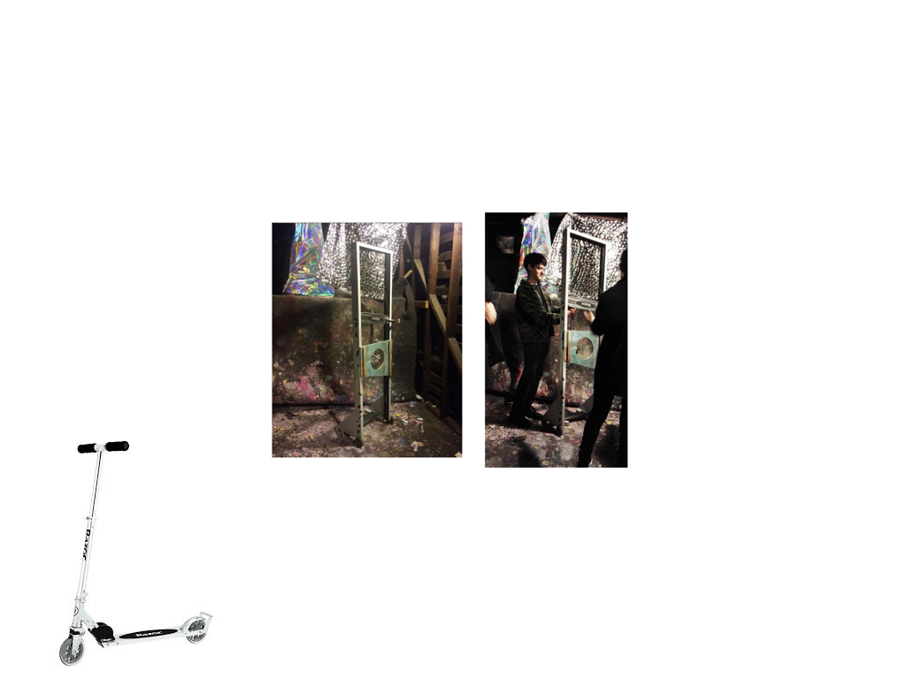
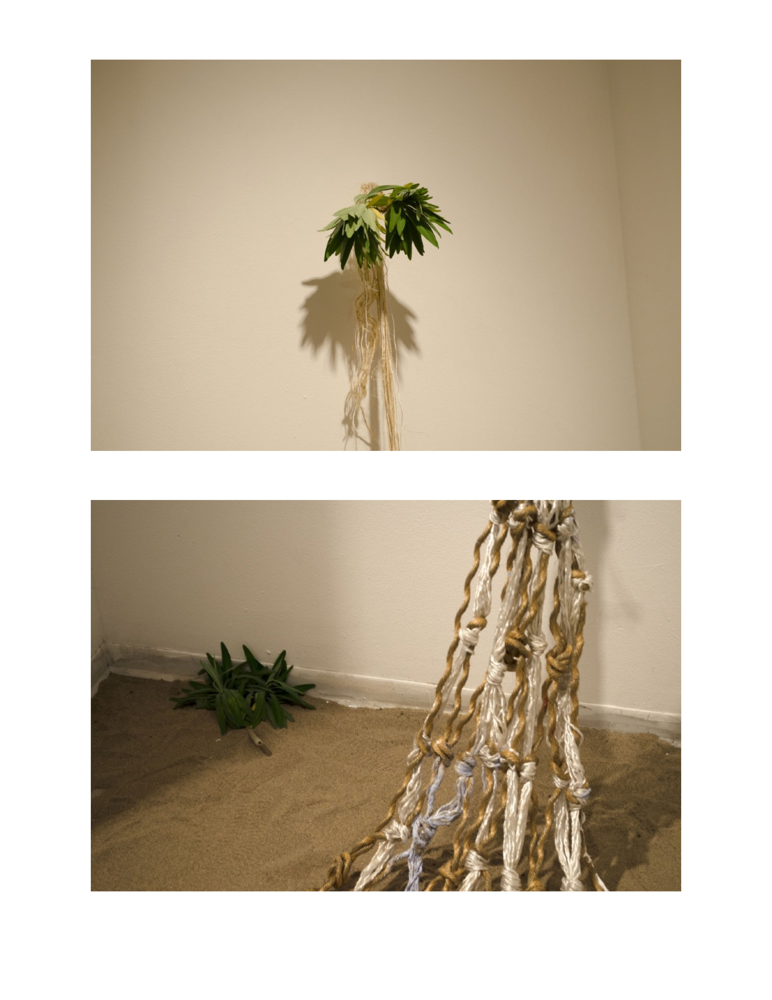
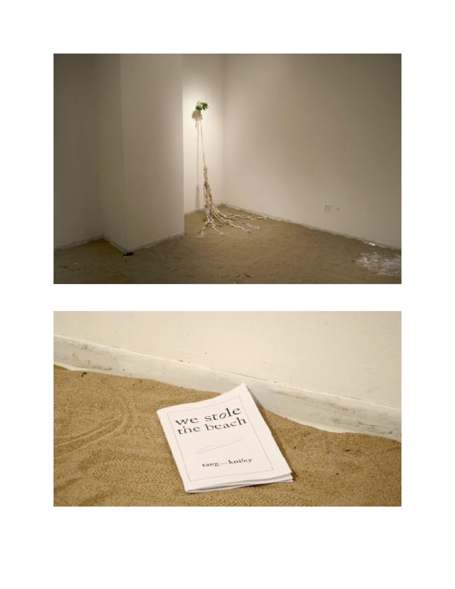
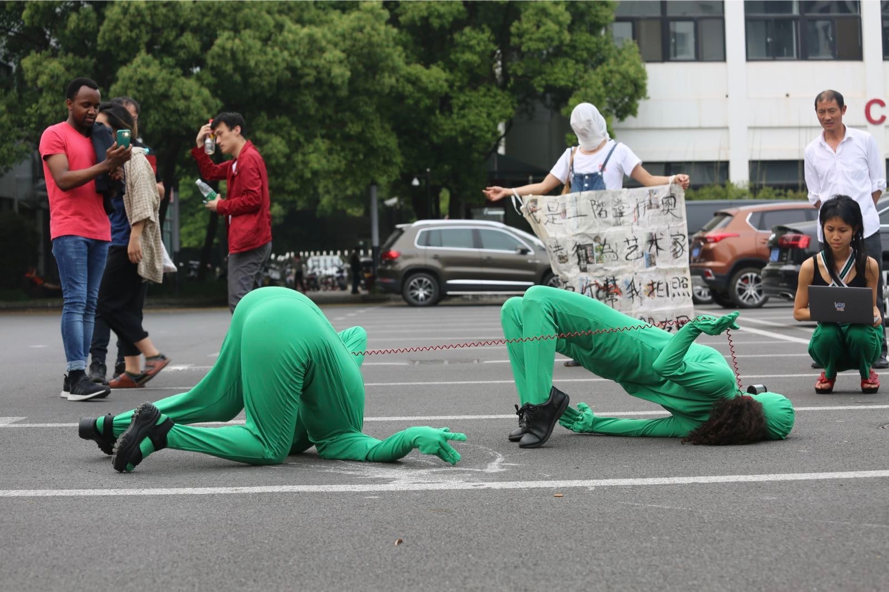
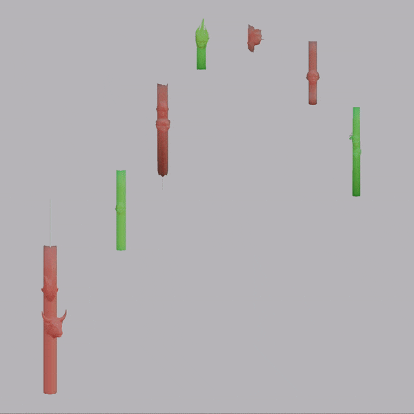
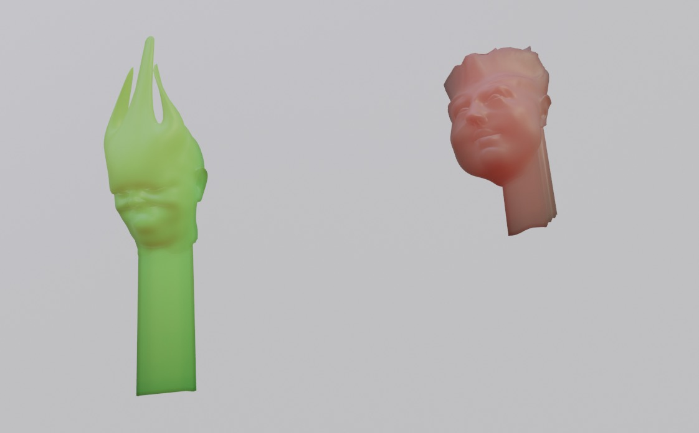

Research how the art school and the engineering school used to be connected. Make a graph. Interview an old-timer. Interview a “sciences” major who became an “arts” major. And versa-vice. Vice. Art as making. Art as conceptual. How does this connect to Daryll Hamamoto. The Dark Side. Capitalism and engineering and art. The age of enlightenment and schools privileging “sciences” as a separate disciplina from “artz.” In structure and in conversations of students. Paying respect. The Great Chain of Being and coloneyesation and splitting up “ideas” into concepts. Before you split ideas into “separate” concepts you can hold/sell, you need to be able to objectify them. English objectifies concepts in its words. Imperialist nostalgia. Splitting ideas into holdable sellable concepts as related to ‘majors.’ When do we ‘need’ to split ideas into labels/words, in order to “differentiate” between idears? Limits, borders, gradation-nations. Liek, to Differentiate among egg and ketchup, between tree and carrot, between taste and bait. ?!



three buddies resolution





Sampling from an EMT training library of lung sounds, EMF (electromagnetic frequencies) from the starting from a wifi router, and various '80s disco bangers attuned to the conditions of radical uncertainty (“no romance/without finance”, “so many men/so little time/how can I choose?”), in this work, candles dance and spin along in a formation market speculators might call “out of breath.”